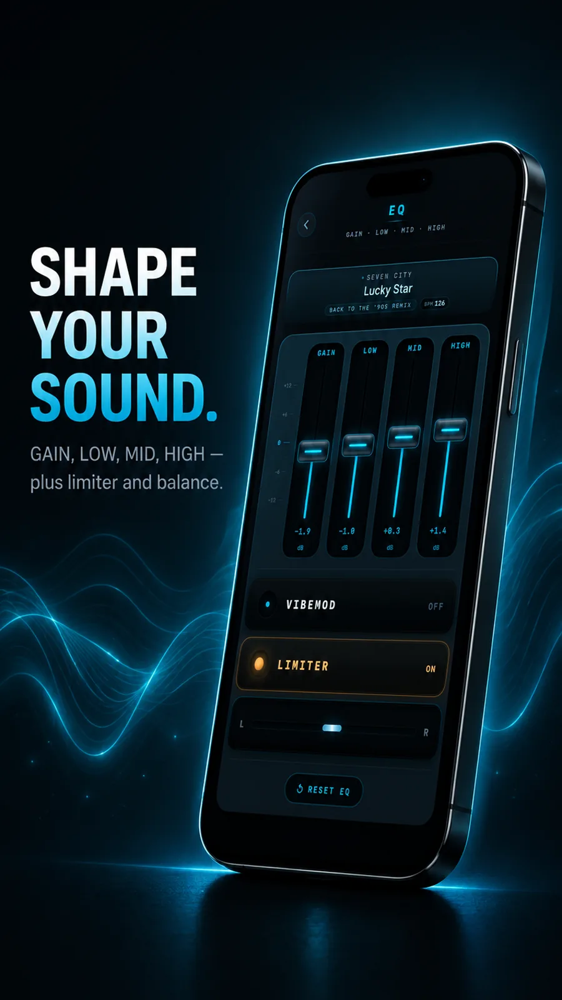

Pick VOX if
You are all-in on Apple devices, want a mature player with years of polish, and never need to change a song's key or speed.
VibeDeck Player vs VOX
VOX by Coppertino is the established offline music player on iPhone: polished, reliable, Apple-only. VibeDeck Player is the newer alternative built around one thing VOX does not do: real-time pitch and tempo control. Here is the honest breakdown.

This is not a hit piece. VOX is a good player, and if your whole life is inside the Apple ecosystem and you never touch pitch controls, it will serve you well. VibeDeck Player exists for the listeners VOX leaves out: people who want to change the key and speed of their music, people on Android, and people who prefer paying once instead of subscribing forever.
Based on publicly listed features as of September 2026. Details can change; check the current App Store listings for both apps.
| Feature | VOX | VibeDeck Player |
|---|---|---|
| Platforms | iOS, iPadOS, macOS | iOS, iPadOS, Android |
| Local FLAC, MP3, WAV playback | Yes | Yes |
| Fully offline, no account needed | Yes | Yes |
| Ads | None | None |
| Equalizer | Yes | Yes, 3-band EQ + Gain |
| Real-time pitch shifting | No | Yes, up to +8 / -8 semitones |
| Tempo control | No | Yes, independent of pitch |
| Waveform scrubbing and BPM readout | No | Yes |
You are all-in on Apple devices, want a mature player with years of polish, and never need to change a song's key or speed.
You sing, play, dance or DJ and want pitch and tempo tools; you use Android; or you want a lifetime license instead of a subscription.
Both are free to start. Install each, load the same tracks, and keep the one that fits how you listen.
The core player is free with no ads. Premium unlocks the full sound engine: pitch and filter, 3-band EQ with gain, limiter, VibeMod, TONE, AURA and Smart Metadata.
Prices may vary by region; the App Store and Google Play listings always show the current local price.
Yes. Both play the same local files, so your library moves over as-is. No conversion, no re-buying anything.
Yes, unlike VOX it runs on Android as well as iPhone and iPad.
Yes, the core player is free with no ads on both platforms.
Download VibeDeck Player
Try the VOX alternative with pitch and tempo control. Free, no ads, no account.